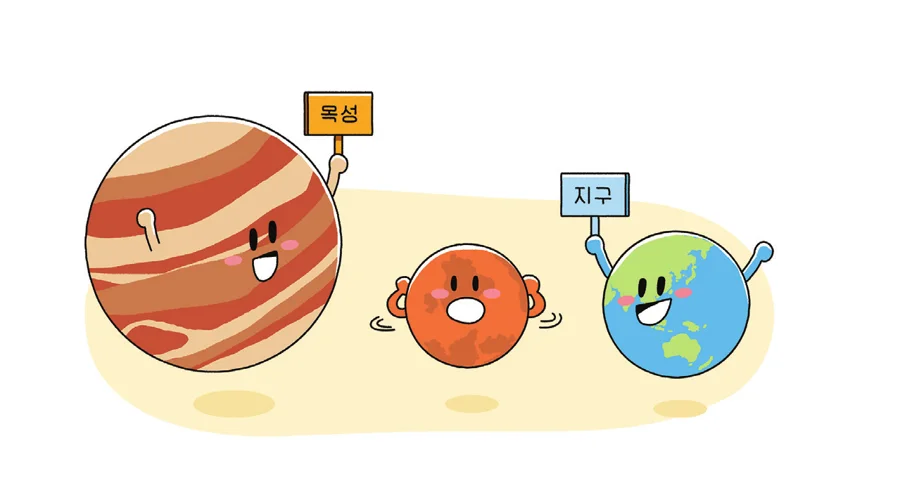
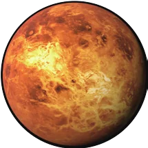
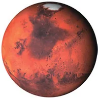

들어가기교과서 234쪽
이전 단원 확인하기빈칸에 들어갈 알맞은 단어를 골라 써 보자.
보기: 해왕성, 목성, 혜성
- 1혜성은 태양 주위를 긴 타원 궤도로 공전한다.
- 2해왕성은 대기의 소용돌이인 대흑점이 있다.
- 3목성의 표면에는 대기의 소용돌이인 대적점이 나타난다.
이 단원을 배우면
· 지구형 행성과 목성형 행성의 특징을 설명할 수 있다.
생각 깨우기나는 어디로 가야 하지?

태양 주위를 공전하는 태양계 행성은 지구와 특징이 비슷한 행성도 있고, 목성과 특징이 비슷한 행성도 있다.
화성은 지구와 목성 중 어느 행성과 특징이 비슷할까?
화성은 지구와 특징이 비슷하다. 화성은 지구와 같이 표면이 단단한 암석으로 이루어져 있기 때문이다. 목성은 표면이 기체로 이루어져 있다.
태양계 행성 분류하기교과서 234쪽 · 해 보기
해 보기그래프로 행성의 특징 비교하기
다음은 태양계 행성의 특징을 나타낸 그래프이다. 버튼을 눌러 질량, 반지름, 위성 수를 비교해 보자.
질량과 위성 수 그래프는 값 차이가 너무 커서 교과서처럼 세로축 중간을 줄여서 나타냈다. (출처: 미국항공우주국[NASA]) 정확한 수치보다 막대의 대략적인 높이를 비교해 보자.
분류 놀이비슷한 행성끼리 두 집단으로 나누어 보자.
행성 카드를 눌러 고른 뒤 집단 상자를 누르면 옮겨진다. (끌어다 놓아도 된다.) 다 옮기면 「확인하기」를 누르자.
집단 가
집단 나
정리각 집단에 속한 행성의 공통적인 특징을 정리해 보자.
| 집단 가 | 집단 나 | |
|---|---|---|
| 행성 | 수성, 금성, 지구, 화성 | 목성, 토성, 천왕성, 해왕성 |
| 공통적인 특징 | 행성의 질량과 반지름이 작고, 위성이 없거나 적다. | 행성의 질량과 반지름이 크고, 위성의 수가 많다. |
지구형 행성과 목성형 행성교과서 235쪽 · 그림 Ⅶ-2
지구형 행성
 수성
수성
금성 지구
지구
화성태양계 행성은 특징에 따라 지구형 행성과 목성형 행성으로 분류할 수 있다. 수성, 금성, 지구, 화성은 지구형 행성이다.
지구형 행성은 질량과 반지름이 목성형 행성에 비해 작고, 표면이 단단한 암석으로 이루어져 있다. 또 고리가 없고 위성은 없거나 수가 적다.
목성형 행성
 목성
목성 토성
토성 천왕성
천왕성 해왕성
해왕성목성, 토성, 천왕성, 해왕성은 목성형 행성이다.
목성형 행성은 질량과 반지름이 지구형 행성에 비해 크고, 표면이 기체로 이루어져 있다. 또 고리가 있고 위성 수가 많다.
한눈에 비교하기
| 구분 | 지구형 행성 | 목성형 행성 |
|---|---|---|
| 행성 | 수성, 금성, 지구, 화성 | 목성, 토성, 천왕성, 해왕성 |
| 질량 | 작다 | 크다 |
| 반지름 | 작다 | 크다 |
| 표면 상태 | 암석 | 기체 |
| 고리 | 없다 | 있다 |
| 위성 수 | 없거나 적다 | 많다 |
| 평균 밀도 (보충) | 크다 | 작다 |
확인하고 정리하기교과서 235쪽
스스로 확인하기
- 1지구형 행성에는 수성, 금성, 지구, 화성이/가 있다.
- 2탐구 능력 | 태양계 행성을 그림과 같이 두 집단 (가)와 (나)로 분류할 때 목성형 행성은 어디에 해당하는지 고르고, 그렇게 생각한 까닭을 설명해 보자.
목성형 행성 → (나)
목성형 행성은 지구형 행성에 비해 질량과 반지름이 크기 때문에 (나)에 해당한다.
추가 확인 문제빈칸에 들어갈 알맞은 단어를 골라 써 보자.
보기: 크다, 작다, 많다, 적다
- 1지구형 행성은 목성형 행성에 비해 질량과 반지름이 작다.
- 2목성형 행성은 고리가 있고, 지구형 행성에 비해 위성 수가 많다.
O / X 확인문장이 옳으면 O, 옳지 않으면 X
③ 지구(위성 1개)와 화성(위성 2개)은 위성이 있다. 위성이 없는 행성은 수성과 금성이다.
배운 내용 정리하기 · 태양계 행성
수성, 금성, 지구, 화성
질량·반지름 작다 · 표면 암석
고리 없음 · 위성 없거나 적다
목성, 토성, 천왕성, 해왕성
질량·반지름 크다 · 표면 기체
고리 있음 · 위성 많다
영상으로 보는 지구형 vs 목성형마무리 영상
다음 시간에는
‘3. 태양의 활동’에 대해 알아보자. (교과서 236~239쪽)